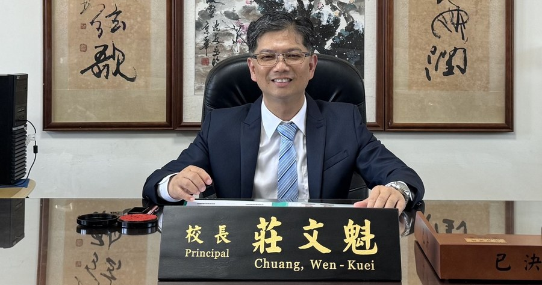

🏆
Changhua County Teaching Platinum Award · Gold Medal
彰化縣教學白金獎競賽 · 金質獎
Awarded the gold medal at the 2014 (民國 103 年) Changhua County Teaching Platinum Award competition.
103 年度榮獲彰化縣教學白金獎競賽金質獎。

Sigang's school vision speaks in four words — Humanistic, Ecological, Studious, Sincere — held together by one quiet wish: "Life is good." These aren't slogans on a wall; they are the four questions every classroom keeps asking: How do we carry our local culture forward? How do we live with the land and the sea? How do we stay hungry to learn? How do we meet each other honestly? 西港的學校願景用四個字說完——人文、生態、好學、真誠，被一句簡單的祝福串起來：「人生真好」。這不是牆上的口號，而是每堂課靜靜在問的四個問題：我們怎麼承接這片土地的文化？我們怎麼跟土地與大海共處？我們怎麼讓自己一直想學？我們怎麼真誠地遇見彼此？
Since 1945, 30 principals have served Sigang Elementary. Each carried forward a school that has never been large, but has always been steady. The lighthouse never moved; only the hands that kept it lit changed. 自 1945 年 12 月起，西港國小已歷經 30 任校長——學校從未變得龐大，但始終穩健。燈塔沒有移動過，只是守護它的手換了一雙又一雙。